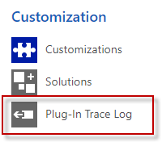

Gather information
If you see activeTAPI does do anything,

follow these steps:
Contact your Administrator! Honestly! Bus as a user you won't be able to see any of the details behind the curtain, of course.
As an Administrator: Enable Plug-In Trace Log

NOTE: Depending whether you're using Dynamics 365 Online, Power Apps or on Dynamics 365 On-Premise, there are different way to accomplish this. Finally, you will find the Plug-In Trace Log here:

Before we can see anything, we need to reproduce the 'problem'.
Enter a telephone number and let activeTAPI (try to) format it. Well, activeTAPI does not actually format the telephone number. That is the reason why you're reading these pages, isn't it? But now, you have got some more information!
Navigate to the Plug-In Trace Log entity (see above). Refresh your view and, you should see some records:

If there is a Exception it is very important to get the complete exception information. Select, copy and past and open with any editor. Maybe you can immediately see what is wrong, otherwise check the Knowledge Base for the exception message, or send us an e-mail.
Normally the records which explicitly refer to MSPro.PlatformServices.ServcieMessage contains more and better information.
If you encounter an empty message block, the Plug-in was not even executed. Continue reading here.